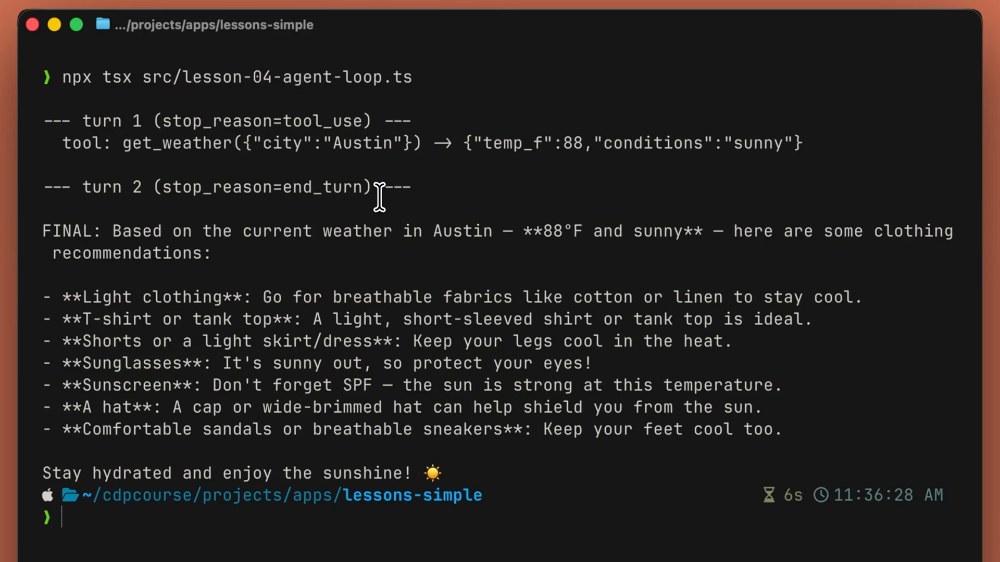
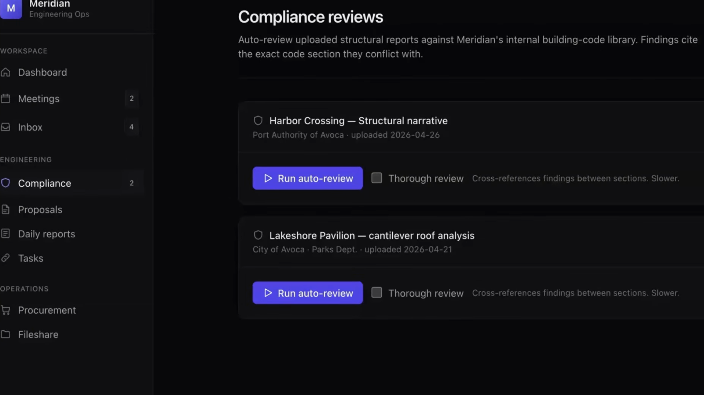
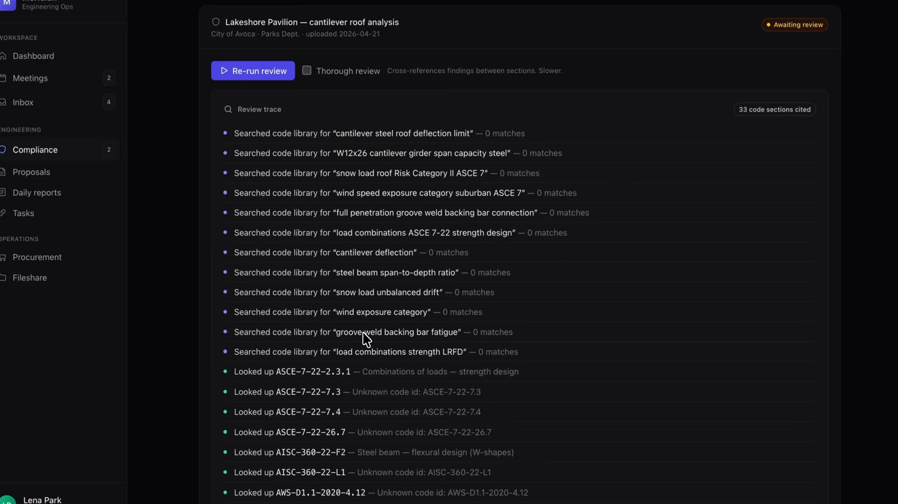

Как устроен цикл агента
Чему научитесь
Видео 3:10 и текст урока
К концу урока вы сможете:
- объяснить, что такое агент и из каких шагов состоит цикл агента;
- написать минимальный цикл агента на Python, который выбирает ветку по причине остановки:
tool_use,end_turnили любая другая; - объяснить, почему без ветки для прочих причин остановки цикл снова и снова отправляет тот же запрос и вы каждый раз за него платите.
Видео и текст урока.
Вы уже делали запросы к API, но один запрос возвращает только один ответ. Чтобы автоматизировать рабочий процесс, Claude должен действовать, смотреть на результат, решать, что делать дальше, и продолжать. Именно эту схему имеют в виду, когда говорят об агентных процессах (agentic workflows).
Что такое агент на самом деле
Агент — это автономная версия Claude: он сам ведёт обе стороны цикла обмена сообщениями, без человека посередине. Агент получает задачу, выбирает инструмент и выполняет код в цикле, пока Claude не решит, что задача выполнена.
Проще всего реализовать цикл агента так:
- Отправьте Claude сообщение вместе со списком доступных инструментов.
- Claude возвращает либо окончательный ответ, либо запрос на вызов одного из определённых вами инструментов.
- Ваш код выполняет этот инструмент.
- Вы отправляете результат обратно Claude.
- Повторяйте, пока причина остановки (stop reason) равна
tool_use.end_turnозначает, что Claude закончил, а любая другая причина остановки тоже завершает цикл.
Представьте себе разговор, в котором стороны говорят по очереди: пользователь начинает, агент вызывает инструмент, инструмент возвращает результат, и агент продолжает, пока не получит ответ.
Минимальный рабочий пример
Чтобы увидеть этот цикл в работе от начала до конца и не тащить за собой базу данных или интерфейс, подключим фиктивный инструмент get_weather и спросим Claude, что надеть сегодня в Остине. Сам Claude погоду узнать не может, поэтому ему придётся вызвать инструмент, прочитать результат и только потом ответить вам.
Вот весь скрипт:
import anthropic
client = anthropic.Anthropic()
# The tools array tells Claude what's available:
# a name, a description, and a JSON schema for the inputs.
tools = [
{
"name": "get_weather",
"description": "Get the current weather for a city.",
"input_schema": {
"type": "object",
"properties": {
"city": {
"type": "string",
"description": "The city to get weather for",
}
},
"required": ["city"],
},
}
]
# run_tool is just a hardcoded lookup.
# In a real app, this would hit your database, an API, whatever.
def run_tool(name, tool_input):
if name == "get_weather":
return f"Weather in {tool_input['city']}: 95F, sunny"
raise ValueError(f"Unknown tool: {name}")
messages = [
{"role": "user", "content": "What should I wear in Austin today?"}
]
# The agent loop. Each iteration sends messages to Claude
# and switches on the response's stop reason.
while True:
response = client.messages.create(
model="claude-sonnet-5",
max_tokens=1024,
tools=tools,
messages=messages,
)
if response.stop_reason == "end_turn":
# Claude is done. Print the final text and break.
for block in response.content:
if block.type == "text":
print(block.text)
break
elif response.stop_reason == "tool_use":
# Find the tool use blocks in the response and run each one.
tool_results = []
for block in response.content:
if block.type == "tool_use":
result = run_tool(block.name, block.input)
tool_results.append(
{
"type": "tool_result",
"tool_use_id": block.id,
"content": result,
}
)
# Push the assistant's response and our tool results
# back into messages, then loop again so Claude can answer.
messages.append({"role": "assistant", "content": response.content})
messages.append({"role": "user", "content": tool_results})
else:
# Any other stop reason, such as max_tokens or refusal.
# Nothing in messages has changed, so stop here. Looping
# again would pay for the same request over and over.
print(f"Stopped early: {response.stop_reason}")
break
Обратите внимание на три части:
- Массив
toolsсообщает Claude, что ему доступно: имя, описание и JSON-схему входных данных. run_tool— просто заглушка: ответ прописан прямо в коде. В настоящем приложении здесь было бы обращение к вашей базе данных, к API — к чему угодно.- Цикл — это и есть цикл агента. На каждой итерации он отправляет сообщения Claude и выбирает ветку по причине остановки в ответе. При
end_turnClaude закончил: печатаем итоговый текст и выходим из цикла. Приtool_useнаходим блокиtool_use, выполняем каждый, добавляем ответ ассистента и результаты инструментов обратно вmessagesи идём на новый круг, чтобы Claude мог ответить. При любой другой причине печатаем её и выходим.
Не пропускайте эту последнюю ветку. Без неё ответ, оборванный на max_tokens, ничего не добавляет в messages, поэтому цикл снова отправляет тот же запрос, и вы каждый раз за него платите. В документации для каждой причины остановки сказано, что с ней делать.
Запуск
Запустив скрипт, вы увидите два хода:
- Ход первый: причина остановки —
tool_use. Claude запрашиваетget_weatherдля Остина, и ваш код возвращает температуру и погодные условия. - Ход второй: причина остановки —
end_turn, и Claude советует надеть что-нибудь лёгкое и хорошо пропускающее воздух.

get_weather, затем итоговый ответ. В видео запущена другая версия скрипта — на TypeScript, и её инструмент возвращает 88°F, а не 95F, как в коде выше.Два вызова API, одно выполнение инструмента, один итоговый ответ. Это и есть весь цикл. Всё, что вы будете строить на Claude API, будет устроено примерно так же.
Тот же цикл в продакшене
В реальной среде этот же цикл может работать, например, за эндпоинтом автоматической проверки: агент проверки на соответствие нормам читает отчёт по конструкциям, через инструмент находит нужные строительные нормы и по ходу работы одно за другим записывает замечания о рисках обратно в базу данных.

Схема цикла точно такая же, как в скрипте, который вы только что запустили. Отличия такие:
- настоящие инструменты вместо заглушки с погодой;
- результаты потоком уходят в интерфейс как server-sent events;
- замечания сохраняются в таблицу замечаний о рисках.

Итог
- Агент — это Claude в цикле: наблюдать, решать, действовать, повторять.
- Цикл простой: отправить сообщения с инструментами, выполнить любой инструмент, который запросит Claude, вернуть результат и остановиться, когда причина остановки — что угодно, кроме
tool_use. - Цикл и инструменты — на вас. Рассуждения — на Claude.
- Та же схема цикла масштабируется от демо с фиктивной погодой до агента проверки на соответствие нормам в продакшене — меняются только инструменты и обвязка.
- Если вы не хотите сами вести цикл, Managed Agents выполнят ровно этот цикл за вас на инфраструктуре Anthropic.
Дальше
Следующий урок — «Что такое tool use»: что такое инструмент, кто на самом деле его выполняет и как Claude решает, когда его вызвать.
Оригинал урока: The agent loop explained.